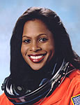

Lyndon B. Johnson Space Center
Houston, Texas 77058
|
National Aeronautics and Space Administration Lyndon B. Johnson Space Center Houston, Texas 77058 |
 |
Biographical Data |
||
Joan E. Higginbotham
NASA Astronaut (former)
PERSONAL DATA: Born in Chicago, Illinois. She enjoys body building (weightlifting), cycling, music, motivational speaking.
EDUCATION: Graduated from Whitney M. Young Magnet High School, Chicago, Illinois, in 1982; received a Bachelor of Science degree in Electrical Engineering from Southern Illinois University at Carbondale, in 1987, a Masters of Management from Florida Institute of Technology in 1992, and a Masters in Space Systems from Florida Institute of Technology in 1996.
ORGANIZATIONS: Delta Sigma Theta Sorority, Inc., The Gulf Coast Apollo Chapter of the Links, Inc., Association of Space Explorers ( ASE), and Sickle Cell Association of the Texas Gulf Coast, Board Member.
AWARDS: NASA Exceptional Service Medal; Keys to the Cities of Cocoa and Rockledge, Florida; Group Achievement Award for STS-26 Return to Flight; Kennedy Space Center Public Affairs Certificate of Appreciation for Service; Commendation of Merit for Service to the Department of Defense (DOD) Missions; Presidential Sports Award in bicycling and weight training; Outstanding Woman of the Year Award; Outstanding Performance 1992, 1993, 1995; National Technical Association’s 50 Distinguished Scientists and Engineers; Florida Institute of Technology’s Distinguished Alumni for 1997; Southern Illinois University’s Distinguished Alumni; Essence Magazine’s Top 50 Women of 2004; National Technical Association’s 2007 Technical Achiever (Engineer); League of Black Women Black Rose Award Recipient 2007; Women of Color in Technology Career Achievement Award Recipient 2007.
NASA EXPERIENCE: Joan Higginbotham began her career in 1987 at the Kennedy Space Center (KSC), Florida, as a Payload Electrical Engineer in the Electrical and Telecommunications Systems Division. Within six months she became the lead for the Orbiter Experiments (OEX) on OV-102, the Space Shuttle Columbia. She later worked on the Shuttle payload bay reconfiguration for all Shuttle missions and conducted electrical compatibility tests for all payloads flown aboard the Shuttle. She was also tasked by KSC management to undertake several special assignments where she served as the Executive Staff Assistant to the Director of Shuttle Operations and Management, led a team of engineers in performing critical analysis for the Space Shuttle flow in support of a simulation model tool, and worked on an interactive display detailing the Space Shuttle processing procedures at Spaceport USA (Kennedy Space Center’s Visitors Center). Higginbotham then served as backup orbiter project engineer for OV-104, Space Shuttle Atlantis, where she participated in the integration of the orbiter docking station (ODS) into the space shuttle used during Shuttle/Mir docking missions. Two years later, she was promoted to lead orbiter project engineer for OV-102, Space Shuttle Columbia. In this position, she held the technical lead government engineering position in the firing room where she supported and managed the integration of vehicle testing and troubleshooting. She actively participated in 53 space shuttle launches during her 9-year tenure at Kennedy Space Center.
Selected as an astronaut candidate by NASA in April 1996, Joan Higginbotham reported to the Johnson Space Center in August 1996. Since that time, she had been assigned technical duties in the Payloads & Habitability Branch, the Shuttle Avionics & Integration Laboratory (SAIL), the Kennedy Space Center (KSC) Operations (Ops) Support Branch, where she tested various modules of the International Space Station for operability, compatibility, and functionality prior to launch, the Astronaut Office CAPCOM (Capsule Communicator) Branch in the startup and support of numerous space station missions and space shuttle missions, the Robotics Branch, and Lead for the International Space Station Systems Crew Interfaces Section. Joan has logged over 308 hours in space having completed her first mission with the crew of STS-116 where her primary task was to operate the Space Station Remote Manipulator System (SSRMS).
Joan Higginbotham was assigned to the STS-126 mission targeted for launch in September, 2008. In November 2007, Joan Higginbotham retired from NASA in order to pursue a career in the private sector.
SPACE FLIGHT EXPERIENCE: STS-116 Discovery (December 9-22, 2006). The seven-member crew on this 12-day mission continued construction of the ISS outpost by adding the P5 spacer truss segment during the first of four spacewalks. The next two spacewalks rewired the station’s power system, preparing it to support the addition of European and Japanese science modules by future shuttle crews. The fourth spacewalk was added to allow the crew to coax and retract a stubborn solar panel to fold up accordion-style into its box. Discovery also delivered a new crew member and more than two tons of equipment and supplies to the station. Almost two tons of items no longer needed on the station returned to Earth with STS-116. Mission duration was 12 days, 20 hours and 45 minutes.
NOVEMBER 2007